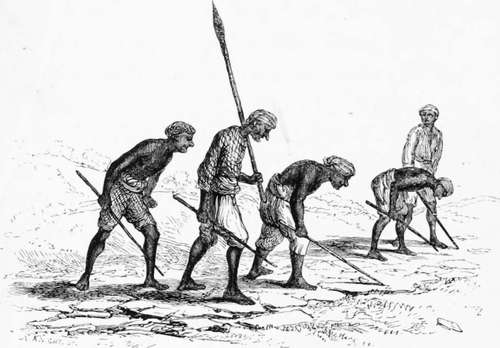
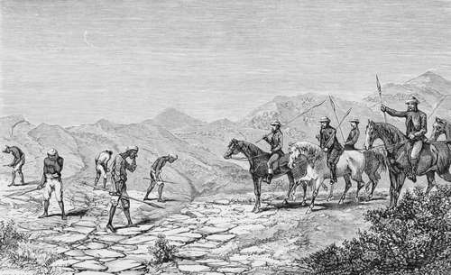

Chapter XI. Part 3
Description
This section is from the book "Hog Hunting In The East, And Other Sports", by J. T. Newall. Also available from Amazon: Hog Hunting in the East, and Other Sports.
Chapter XI. Part 3
But not for very long was this to continue. Soon the rocky and broken ground was reached, and the foot-print was frequently quite uncliscernible All the men had now to work, some sticking to the trail, others ready to move to a flank or go on ahead in the endeavour the quicker to pick up the track when lost. Natta was several times appealed to. No words passed, but an approving grunt or disparaging cluck of the tongue against the roof of the mouth was sufficient to indicate his opinion. Still, though at a far slower rate, the party advanced, carrying the track through one or two nullahs, and over many bad places, where sheet rock and stones might well have been expected to give no indication of the passage of any animal. A displaced stone, a bit of broken dry . grass, even the rock itself, with perhaps a little dust thrown upon it, spoke with a language of their own, and served to guide the keen-eyed and practised men.
* See Appendix, Note P.
Pugging.—a Cold Scent Natta Cautious.
More than once Natta was obliged to warn the hunters not to override the scent, but to restrain their horses and let the men keep well ahead.
Each man was armed with a stick, with the point of which he drew lines behind such foot-print as he individually was the first to reach. This served at once to show to the others that it had been examined and ascertained to be genuine ; and also, in several instances, furnished a ready sign, by means of which it could be easily hit upon where the track ahead was lost, and it became necessary to hark back to recover it where last left.
While one or two were labouring to carry on the trail, the others would throw off to the front and flanks, and often pick up the pug ; thus rendering it unnecessary to examine the intervening space. A sharp cluck or low whistle would announce this to those now in the rear, who would either join the leaders, or themselves become, what I may call, the outlying trackers. In this way the trail was lost and found many times, and still the progress was towards the high hills, the nature of the ground obliging Natta to be very cautious in his proceedings. A flock of goats had in one part crossed the track, but it caused only a temporary pause, as the pug was soon hit on beyond.
But when once among the hard, stony ridges and nullahs which lay in the vicinity of the higher hills, and tracking became exceedingly difficult, a more serious check occurred. Here the shikarees separated, and proceeded to cast around, crossing and recrossing and fairly quartering the ground in the neighbourhood.
For some time no sign of the trail could be found, and Natta scratched his head in evident perplexity. Once or twice he looked up and towards the hills, and let his eye traverse the intervening country, as if seeking guidance from the lay of the ground. Then he would confer with the Seeclee, who seemed equally nonplussed, and again make a fresh cast.
A cluck from one of the puggees once called the old hunter to the spot where the man was stooping in intent examination of a mark on the ground. But a brief inspection served to show to the more experienced organs of Natta that, though the track of a pig, it was not fresh, and neither was it that of the animal of which they were in pursuit.
During this time the horses were kept in the rear, some of the riders having dismounted, and, with their imperfect knowledge, endeavoured to assist the puggees in hitting on the trail. At last, to the relief of all, the Kotye man gave a hissing whistle from the other side of a small nullah, and raising his hand, beckoned, by closing his opened palm with a movement towards him.
The Check.—Natta Perplexed Among The Hills
His motion seemed so decided that old Natta's face cleared ; and much relieved, he, with the others, joined the man, and found that there was no mistake.
Once more they set to work, and steadily advanced to the hills.
Natta now fell back to the sahibs, as the trail approached a thinly wooded nullah, and whispered to Norman that the boar had stood once or twice, and had been evidently endeavouring to ascertain that the coast was clear before taking up his position for the day.
" See here, sahib/' he said, as he picked up a piece of dried grass which was indented ; " this has been trod on this morning ; and observe these pugs show where he has been standing. I think we shall find him in this, nullah, or in some patch of bushes near it 4 If.
The trail, however, did not lead directly into the nullah, but kept up the hill on its bank. Again it showed where the hog had stood, and Natta's instinct assured him that the beast was close at hand. The hunters were somewhat scattered as they ascended the stony hill, up which each picked his way on a line of his own ; but all were keenly on the lookout for the pig, each anxious to secure as good a start as his neighbours. The hills rose high and rugged in front: and it was evident that if not quickly overhauled, the boar would escape by some of the tracks well known to and surmountable by him, but impassable for horses. The pugging had now lasted for some hours, and more than one of the sportsmen refreshed himself with a slight pull at the water chogul before he settled himself for action and gathered his reins together.
Suddenly the boar was seen to rise out of the nullah some distance ahead, and stand for a moment behind a bush, apparently intent on learning the cause of the noise so close to his secluded place of rest. A shout or two from the men in front who first saw him quickly warned him that he must trust to flight, and away he rattled up the hill full in view of all. Old Natta pointed triumphantly with his long arm and scraggy finger as the horsemen set their horses going in rapid pursuit, and the loose stones flew from beneath their feet as they passed the now running puggees.
Continue to: